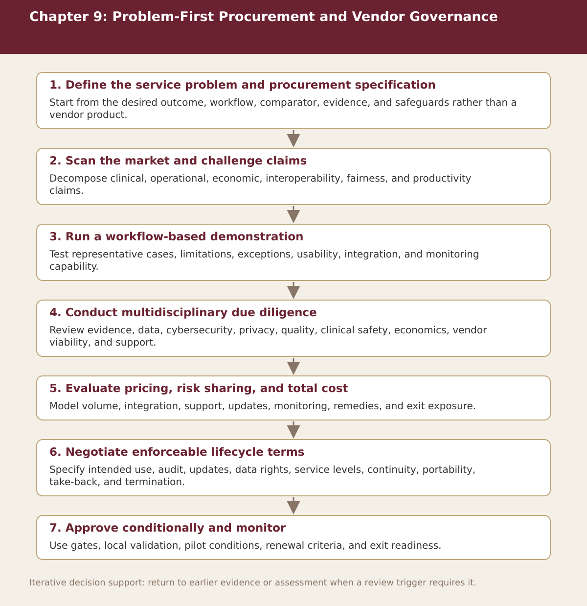

Chapter 9
Problem-First Procurement and Vendor Governance
Chapter-level process map linking the chapter’s decision questions to the companion resources and decision gates.

Process steps
| Step | Stage | Purpose | Required Input | Expected Output | Decision Or Gate |
|---|---|---|---|---|---|
| 1 | Define the service problem and procurement specification | Start from the desired outcome, workflow, comparator, evidence, and safeguards rather than a vendor product. | Local evidence and the prior approved step | Versioned record for: Define the service problem and procurement specification | Proceed, revise, escalate, restrict, or stop as appropriate |
| 2 | Scan the market and challenge claims | Decompose clinical, operational, economic, interoperability, fairness, and productivity claims. | Local evidence and the prior approved step | Versioned record for: Scan the market and challenge claims | Proceed, revise, escalate, restrict, or stop as appropriate |
| 3 | Run a workflow-based demonstration | Test representative cases, limitations, exceptions, usability, integration, and monitoring capability. | Local evidence and the prior approved step | Versioned record for: Run a workflow-based demonstration | Proceed, revise, escalate, restrict, or stop as appropriate |
| 4 | Conduct multidisciplinary due diligence | Review evidence, data, cybersecurity, privacy, quality, clinical safety, economics, vendor viability, and support. | Local evidence and the prior approved step | Versioned record for: Conduct multidisciplinary due diligence | Proceed, revise, escalate, restrict, or stop as appropriate |
| 5 | Evaluate pricing, risk sharing, and total cost | Model volume, integration, support, updates, monitoring, remedies, and exit exposure. | Local evidence and the prior approved step | Versioned record for: Evaluate pricing, risk sharing, and total cost | Proceed, revise, escalate, restrict, or stop as appropriate |
| 6 | Negotiate enforceable lifecycle terms | Specify intended use, audit, updates, data rights, service levels, continuity, portability, take-back, and termination. | Local evidence and the prior approved step | Versioned record for: Negotiate enforceable lifecycle terms | Proceed, revise, escalate, restrict, or stop as appropriate |
| 7 | Approve conditionally and monitor | Use gates, local validation, pilot conditions, renewal criteria, and exit readiness. | Local evidence and the prior approved step | Versioned record for: Approve conditionally and monitor | Proceed, revise, escalate, restrict, or stop as appropriate |